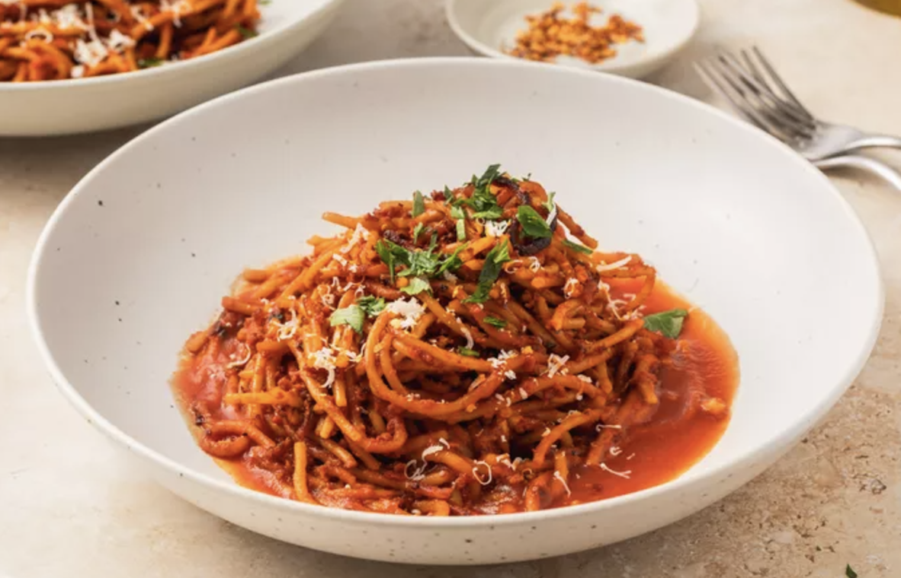

Assassin's Spaghetti

Description
Spaghetti all’Assassina is an adventurous take on traditional pasta,
blending the bold heat of chili flakes with the sweet and tangy depth
of caramelized tomato broth. Unlike classic spaghetti dishes, this recipe pan-fries
the pasta to achieve a unique, crispy texture and charred flavor that adds an unexpected richness.
With layers of spicy, savory, and slightly smoky notes, the dish captures the essence of Italian
culinary ingenuity. Perfectly balanced by the natural sweetness of reduced tomatoes, this pasta is
a treat for those who crave a little fire in their meals. Whether served saucy or dry, Spaghetti all’Assassina
is an unforgettable dish that will leave you craving more.
Ingredients
- 1 tablespoon olive oil
- 2 cloves garlic, minced
- 3 cups tomato puree
- 3 cups water
- 1 teaspoon salt, or to taste
- ¼ cup olive oil
- 2 teaspoons red chili flakes, or to taste
- 6 ounces dry spaghetti
- Salt to taste
- 1 tablespoon finely chopped parsley, for garnish
Steps to Prepare
- Heat olive oil in a pot over medium heat. Add garlic and cook until golden and fragrant, about 1 minute.
- Stir in tomato puree, water, and salt. Bring to a simmer on medium-high heat, then reduce to low and keep warm.
- Pour olive oil into a large non-stick skillet over medium-high heat. Add chili flakes and heat until they start to sizzle, about 1 minute.
- Add raw spaghetti to the skillet and toss until well coated with chili oil.
- Pour in about 3 cups of tomato broth and use tongs to move the spaghetti side to side, distributing the broth evenly. Cook until most of the broth is absorbed or evaporated, and the spaghetti starts frying in the pan.
- Turn the spaghetti with tongs and evenly arrange in the pan. Cook until the pasta starts to brown and lightly char.
- Add about 2 more cups of tomato broth and repeat the process. Continue cooking until the spaghetti is charred to your liking and cooked to the desired doneness.
- Serve with a drizzle of olive oil, more chili flakes, and garnish with chopped parsley.